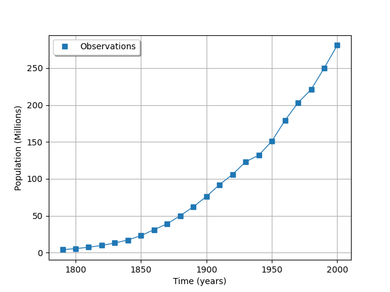
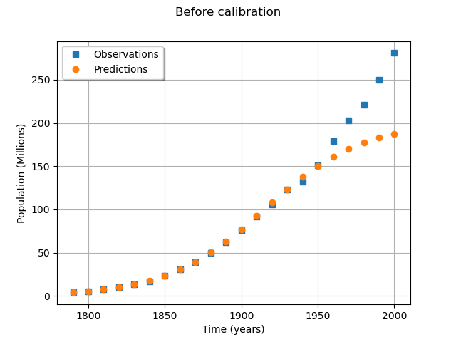
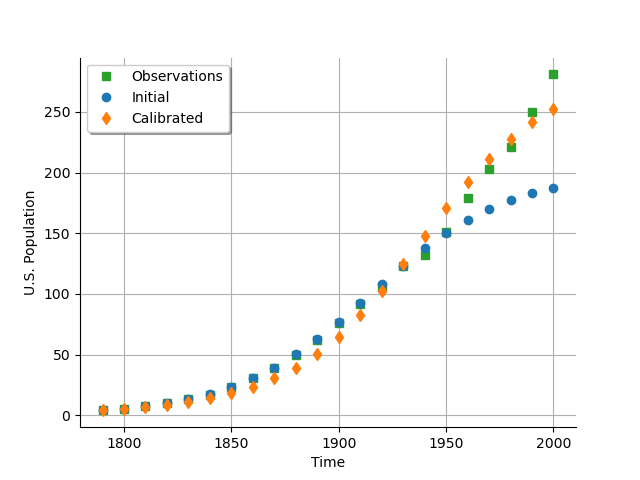
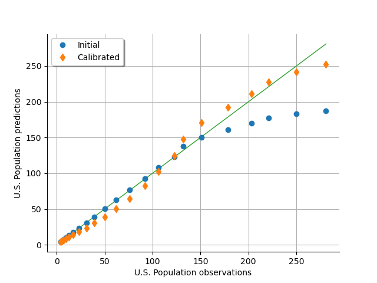
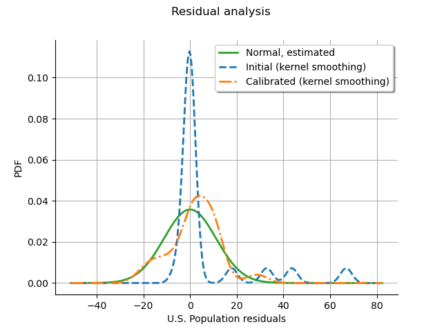
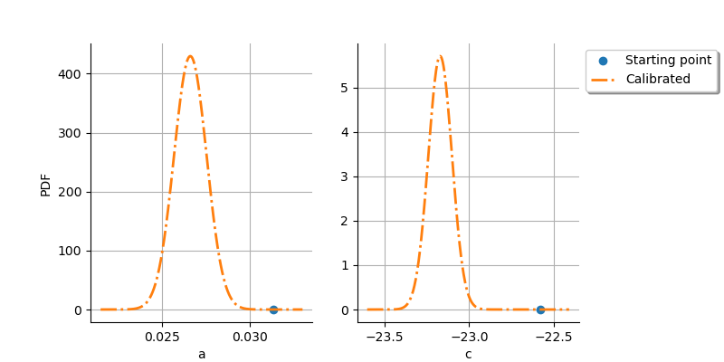

Note
Go to the end to download the full example code
Calibration of the logistic model¶
We present a calibration study of the logistic growth model defined here. The data set that we use is the U.S. population from 1790 to 2000. One of the specific properties of this study is that the observations that we use are real world observations. Hence when we calibrate the model on the data, there is a discrepancy that will be seen. In this example, we calibrate the parameters of a model which predicts the dynamics of the size of a population. This shows how we can calibrate a model which predicts a time dependent output. The output of the model is a time series representing the evolution of the population. This requires a transpose of the sample, so that we can benefit from the visualization methods.
Variables¶
In the particular situation where we want to calibrate this model, the following list presents which variables are observed input variables, input calibrated variables and observed output variables.
 : Input. Observed.
: Input. Observed. ,
,  ,
,  : Inputs. Calibrated.
: Inputs. Calibrated. : Output. Observed.
: Output. Observed.
Analysis of the data¶
from openturns.usecases import logistic_model
import openturns as ot
import numpy as np
import openturns.viewer as otv
from matplotlib import pylab as plt
ot.Log.Show(ot.Log.NONE)
We load the logistic model from the usecases module :
lm = logistic_model.LogisticModel()
print("Inputs:", lm.model.getInputDescription())
print("Outputs: ", lm.model.getOutputDescription())
Inputs: [t0,t1,t2,t3,t4,t5,t6,t7,t8,t9,t10,t11,t12,t13,t14,t15,t16,t17,t18,t19,t20,t21,a,c]#24
Outputs: [z0,z1,z2,z3,z4,z5,z6,z7,z8,z9,z10,z11,z12,z13,z14,z15,z16,z17,z18,z19,z20,z21]#22
We see that there are 24 inputs. The first 22 inputs are the timestamps and the last two inputs are the a and c parameters to calibrate. The 22 outputs are the population of the U.S. in millions.
The data is based on 22 dates from 1790 to 2000. The observation points are stored in the data field :
observedSample = lm.data
observedSample[:5]
nbobs = observedSample.getSize()
nbobs
22
timeObservations = observedSample[:, 0]
timeObservations[0:5]
populationObservations = observedSample[:, 1]
populationObservations[0:5]
palette = ot.Drawable.BuildDefaultPalette(1)
graph = ot.Graph("", "Time (years)", "Population (Millions)", True, "topleft")
cloud = ot.Cloud(timeObservations, populationObservations)
cloud.setLegend("Observations")
cloud.setPointStyle(
ot.ResourceMap.GetAsString("CalibrationResult-ObservationPointStyle")
)
graph.add(cloud)
curve = ot.Curve(timeObservations, populationObservations)
curve.setLegend("")
curve.setLineStyle(ot.ResourceMap.GetAsString("CalibrationResult-ObservationLineStyle"))
graph.add(curve)
graph.setColors([palette[0]] * 2)
view = otv.View(graph)

We see that there is a very smooth growth of the U.S. population. This is a good candidate for model calibration.
We consider the times and populations as dimension 22 vectors.
The logisticModel function takes a dimension 24 vector as input and
returns a dimension 22 vector.
The first 22 components of the input vector contains the dates and the
remaining 2 components are and  .
.
Print the number of dates:
print(lm.data.getSize())
22
Get the physical model to calibrate.
logisticModelPy = lm.model
The reference values of the parameters.
Because is so small with respect to , we use the logarithm.
In other words, we calibrate  instead of calibrating
.
This makes the calibration much easier.
instead of calibrating
.
This makes the calibration much easier.
np.log(1.5587e-10)
-22.581998789427587
a = 0.03134
c = -22.58
thetaPrior = [a, c]
In the physical model, the inputs and parameters are ordered as presented in the next table. Notice that there are no parameters in the physical model.
Index |
Input variable |
|---|---|
0 |
t1 |
1 |
t2 |
… |
… |
21 |
t22 |
22 |
a |
23 |
c |
Index |
Parameter |
|---|---|
∅ |
∅ |
Table 1. Indices and names of the inputs and parameters of the physical model.
print("Physical Model Inputs:", lm.model.getInputDescription())
print("Physical Model Parameters:", lm.model.getParameterDescription())
Physical Model Inputs: [t0,t1,t2,t3,t4,t5,t6,t7,t8,t9,t10,t11,t12,t13,t14,t15,t16,t17,t18,t19,t20,t21,a,c]#24
Physical Model Parameters: []
In order to perform calibration, we have to define a parametric model,
with observed inputs and parameters to calibrate.
In order to do this, we create a ParametricFunction where the parameters
are a and c which have the indices 22 and 23 in the physical model.
Index |
Input variable |
|---|---|
0 |
t1 |
1 |
t2 |
… |
… |
21 |
t22 |
Index |
Parameter |
|---|---|
0 |
a |
1 |
c |
Table 2. Indices and names of the inputs and parameters of the parametric model.
logisticParametric = ot.ParametricFunction(logisticModelPy, [22, 23], thetaPrior)
print("Parametric Model Inputs:", logisticParametric.getInputDescription())
print("Parametric Model Parameters:", logisticParametric.getParameterDescription())
Parametric Model Inputs: [t0,t1,t2,t3,t4,t5,t6,t7,t8,t9,t10,t11,t12,t13,t14,t15,t16,t17,t18,t19,t20,t21]#22
Parametric Model Parameters: [a,c]
Check that we can evaluate the parametric function.
populationPredicted = logisticParametric(timeObservations.asPoint())
print(populationPredicted[:5])
[3.9,5.29757,7.17769,9.69198,13.0277]
graph = ot.Graph(
"Before calibration", "Time (years)", "Population (Millions)", True, "topleft"
)
# Observations
cloud = ot.Cloud(timeObservations, populationObservations)
cloud.setLegend("Observations")
cloud.setPointStyle(
ot.ResourceMap.GetAsString("CalibrationResult-ObservationPointStyle")
)
graph.add(cloud)
# Predictions
cloud = ot.Cloud(timeObservations.asPoint(), populationPredicted)
cloud.setLegend("Predictions")
cloud.setPointStyle(ot.ResourceMap.GetAsString("CalibrationResult-PriorPointStyle"))
graph.add(cloud)
graph.setColors(ot.Drawable.BuildDefaultPalette(2))
view = otv.View(graph)

We see that the fit is not good: the observations continue to grow after 1950, while the growth of the prediction seems to fade.
Calibration with linear least squares¶
The calibration algorithm takes input and output samples as arguments. In this case, we choose to consider one single observation in dimension 22. In order to perform calibration, we create a Sample of input times which has one observation in dimension 22.
timeObservationsSample = ot.Sample([timeObservations.asPoint()])
timeObservationsSample[0, 0:5]
Similarly, we create a Sample of output populations which has one observation in dimension 22.
populationObservationsSample = ot.Sample([populationObservations.asPoint()])
populationObservationsSample[0, 0:5]
logisticParametric = ot.ParametricFunction(logisticModelPy, [22, 23], thetaPrior)
Check that we can evaluate the parametric function.
populationPredicted = logisticParametric(timeObservationsSample)
populationPredicted[0, 0:5]
Calibration¶
We are now able to perform the calibration, using linear least squares
using the LinearLeastSquaresCalibration class.
algo = ot.LinearLeastSquaresCalibration(
logisticParametric, timeObservationsSample, populationObservationsSample, thetaPrior
)
algo.run()
calibrationResult = algo.getResult()
thetaMAP = calibrationResult.getParameterMAP()
print("theta After = ", thetaMAP)
print("theta Before = ", thetaPrior)
theta After = [0.0265958,-23.1714]
theta Before = [0.03134, -22.58]
Compared to the value of the parameters before calibration, we can see that the parameters were significantly updated.
In order to see if the optimum parameters are sensitive to the observation errors, we compute 95% confidence intervals.
thetaPosterior = calibrationResult.getParameterPosterior()
print(thetaPosterior.computeBilateralConfidenceIntervalWithMarginalProbability(0.95)[0])
[0.0246465, 0.028545]
[-23.3182, -23.0247]
The 95% confidence intervals of the optimum are relatively narrow: this means that the optimum is not very sensitive to the observation errors. In this case, the parameters are accurately estimated.
In this example, we have considered a single observation in dimension 22. In this case, the parametric model has has 22 outputs, which create a large number of plots. Transpose samples to interpret the data as a Sample in dimension 1 with 22 observations.
if calibrationResult.getInputObservations().getSize() == 1:
calibrationResult.setInputObservations(timeObservations)
calibrationResult.setOutputObservations(populationObservations)
outputPriorMeanDimension22 = calibrationResult.getOutputAtPriorMean()
outputAtPriorDimension1 = ot.Sample.BuildFromPoint(outputPriorMeanDimension22[0])
outputPosteriorMeanDimension22 = calibrationResult.getOutputAtPosteriorMean()
outputPosteriorMeanDimension1 = ot.Sample.BuildFromPoint(
outputPosteriorMeanDimension22[0]
)
calibrationResult.setOutputAtPriorAndPosteriorMean(
outputAtPriorDimension1, outputPosteriorMeanDimension1
)
Increase the default number of points in the plots. This produces smoother spiky distributions.
ot.ResourceMap.SetAsUnsignedInteger("Distribution-DefaultPointNumber", 300)
The next plot presents the U.S. population depending on the time. We see that the calibrated model fits to the data more than the uncalibrated model, especially on the second part of the time interval.
# sphinx_gallery_thumbnail_number = 3
graph = calibrationResult.drawObservationsVsInputs()
graph.setLegendPosition("topleft")
view = otv.View(graph)

As a metamodel, we can compare the predicted U.S. population depending on the observed U.S. population. We see that the model fits to the data accurately for a population up to 150 million people, but diverges when the population gets larger. On the other hand, the calibrated model under-predicts the population for the [0,150] population interval, and over-predicts for the [150,300] interval, balancing the errors so that the model globally fits. The “S” shape of the graph after calibration reveals that the calibrated model has a structure with residuals that do not follow a normal distribution (otherwise the calibrated cloud would be spread over and under the diagonal). In other words, the model and the data do not fit very well.
graph = calibrationResult.drawObservationsVsPredictions()
view = otv.View(graph)

The residuals analysis shows that some residuals were very large before calibration. After calibration, most residuals are in the [-20,20] interval, which explains why the calibrated model fits the data better. We notice that the distribution of the calibrated residuals is relatively close to a normal distribution. This may show that the least squares model is appropriate in this case with respect to this criterion.
graph = calibrationResult.drawResiduals()
view = otv.View(graph)

The next plot shows that there is a significant improvement after the calibration: the initial point is very different from the distribution of the optimum parameter.
graph = calibrationResult.drawParameterDistributions()
view = otv.View(
graph,
figure_kw={"figsize": (8.0, 4.0)},
legend_kw={"bbox_to_anchor": (1.0, 1.0), "loc": "upper left"},
)
plt.subplots_adjust(right=0.8)
otv.View.ShowAll()

Reset default settings
ot.ResourceMap.Reload()